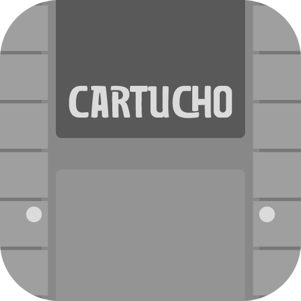

Transforma o seu celular ou computador num videogame antigo: mais de 90 consoles e computadores, do Atari ao PlayStation 2. Grátis para sempre, sem propaganda e funciona sem internet.
Tem Loja com mais de 9 mil jogos grátis liberados pelos autores, nome e capa reconhecidos sozinhos, perfil com troféus do RetroAchievements e partidas com até 4 amigos, perto ou longe.
Baixar a versão mais recente · Privacidade · Termos · Código